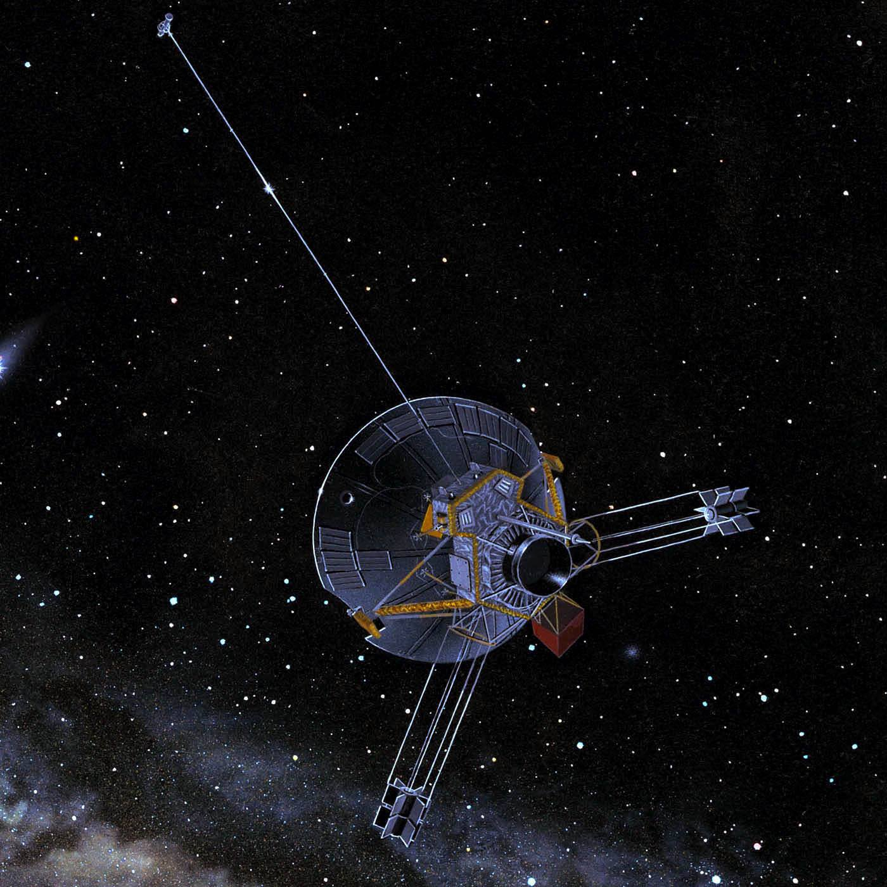

Highlights
1971 - 1990
-
Mariner 9 (Mariner Mars '71 / Mariner-I) was an unmanned NASA space probe that contributed greatly to the exploration of Mars and was part of the Mariner program. Mariner 9 was launched toward Mars on May 30, 1971 from... Read more... -

Landsat 1, originally named "Earth Resources Technology Satellite 1", was the first satellite of the United States' Landsat program. It was a modified version of the Nimbus 4 meteorological satellite and was launched .. Read more... -

Pioneer 10 (originally designated Pioneer F) is an American space probe, launched in 1972 and weighing 258 kilograms (569 pounds), that completed the first mission to the planet Jupiter. Thereafter, Pioneer 10 became the first spacecraft to achieve escape velocity from the Solar System. Read more... -

Viking 1 was the first of two spacecraft (along with Viking 2) sent to Mars as part of NASA's Viking program. On July 20, 1976, it became the first spacecraft to land successfully on Mars and perform its mission... Read more... -
Space Shuttle Enterprise (Orbiter Vehicle Designation: OV-101) was the first orbiter of the Space Shuttle system. Rolled out on September 17, 1976, it was built for NASA as part of the Space Shuttle program to perform ... Read more... -

Voyager 2 is a space probe launched by NASA on August 20, 1977, to study the outer planets. Part of the Voyager program, it was launched 16 days before its twin, Voyager 1, ... Read more... -
Galileo was an American unmanned spacecraft that studied the planet Jupiter and its moons, as well as several other Solar System bodies. Named after the astronomer Galileo Galilei... Read more...